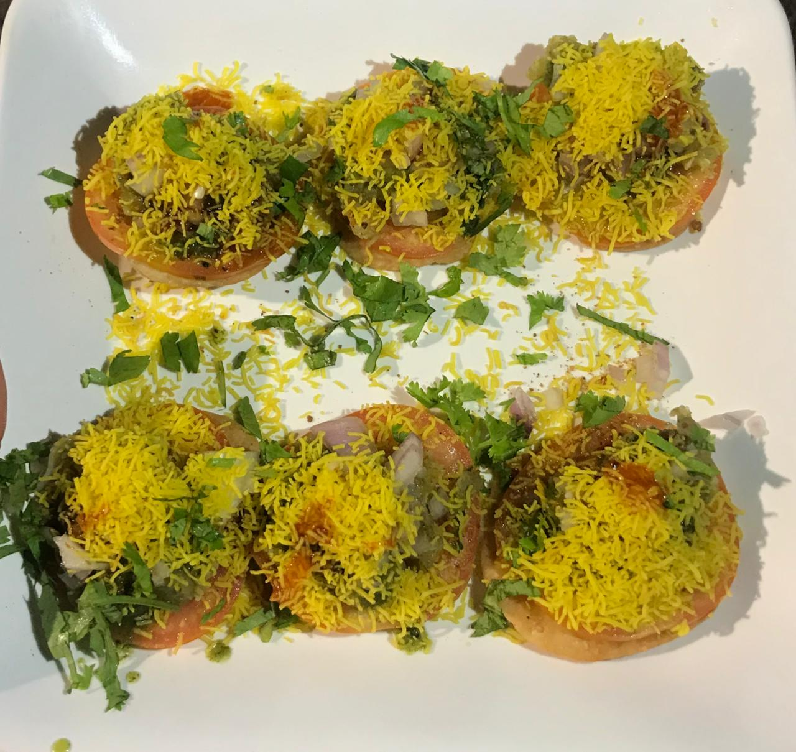

SevPuri
Price--100Rs
Ingredients:
- ½ cup boiled & mashed potatoes
- ½ cup thick curd (whisked)
- 2 tbsp tamarind chutney
- 2 tbsp green chutney
- ½ cup boiled chickpeas (optional)
- Water,Chaat masala, red chilli powder, salt – to taste Sev & coriander leaves – for garnish
Steps:
- Crack open the top of each puri gently.
- Stuff with potato and chickpeas
- Add curd, green chutney, and tamarind chutney.
- Sprinkle chaat masala, red chilli powder, and salt.
- Top with sev and coriander.
- Serve immediately before the puris turn soggy.